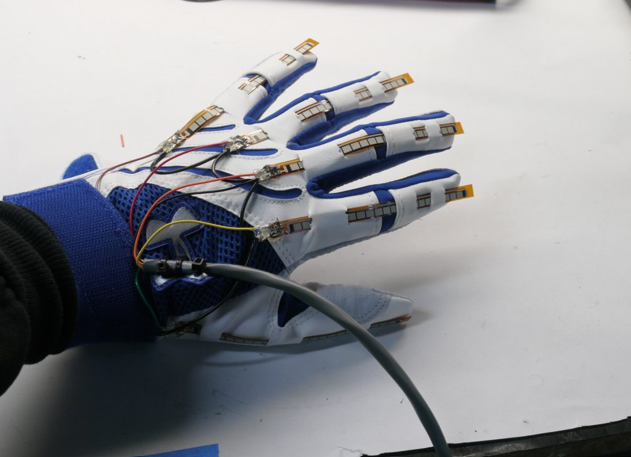
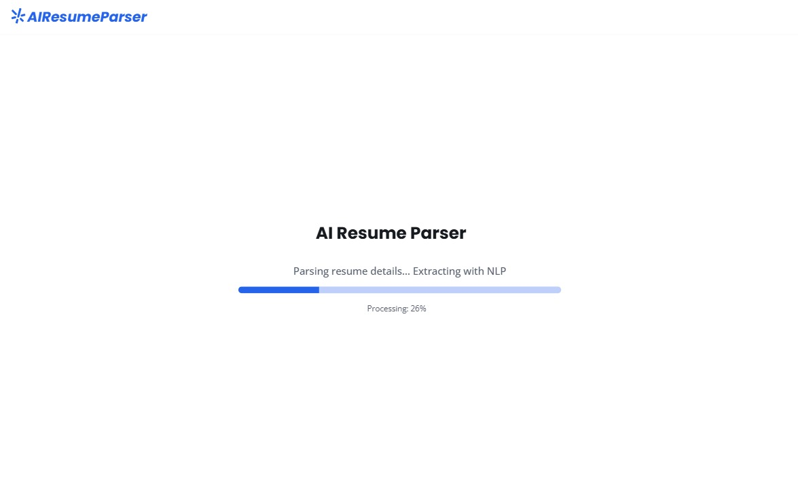
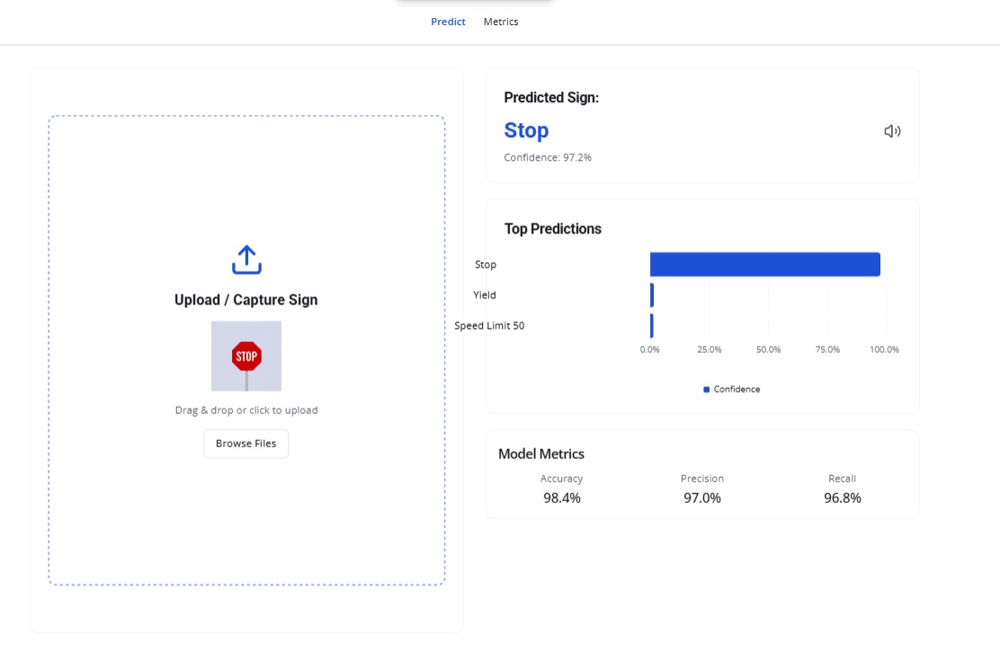
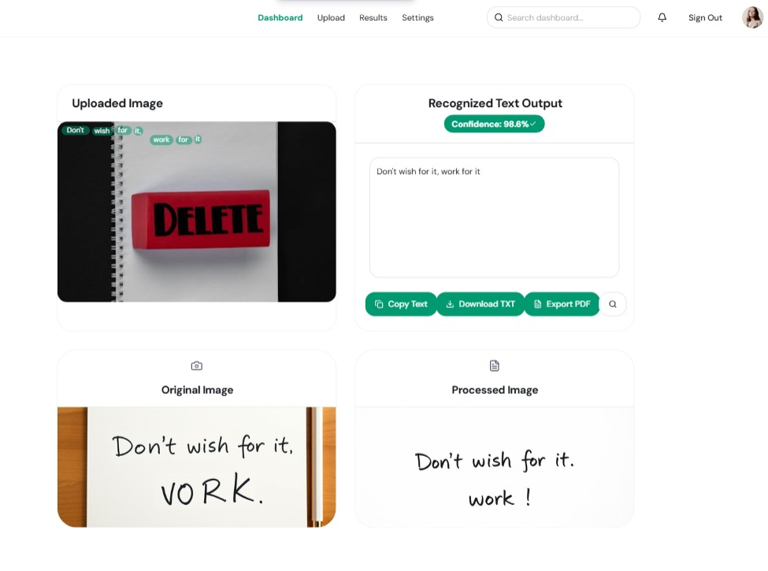
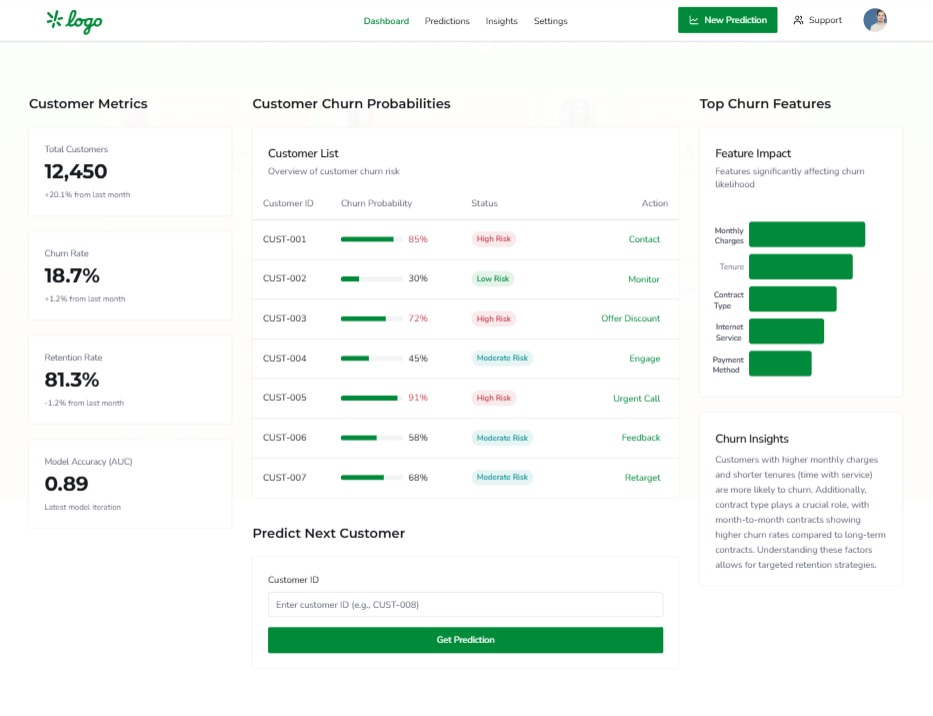
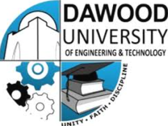
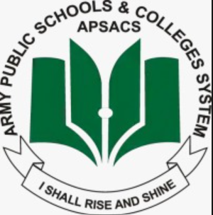
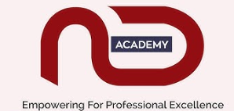
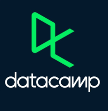

SEP 2026 — PRESENT
AI Instructor · Bano Qabil
Teaching artificial intelligence and supporting learners in developing practical AI skills.
I'm Syeda Umaima Tamkeen — an AI graduate, instructor, and researcher exploring the intersection of intelligent systems, responsible innovation, and human impact.
I hold a Bachelor's degree in Artificial Intelligence from Dawood University of Engineering & Technology. My interests span machine learning, natural language processing, computer vision, and responsible AI.
Beyond building systems, I teach and mentor aspiring technologists. I believe technology creates its greatest value when it becomes accessible, understandable, and useful to people.
Projects in computer vision, NLP, applied machine learning, and AI-powered experiences.

Built a vision-based system using MediaPipe and deep learning models (CNN, ResNet, Transformer) to translate hand gestures into voice, enabling communication for deaf and mute individuals.
Tech Stack: Python, Computer Vision, Deep Learning, NLP, Assistive Tech
View ProjectBuilt an AI-powered e-commerce marketplace simulating platforms like Amazon/Daraz, where AI agents automate product listing, pricing, recommendations, and order management. Sellers upload product images, and AI generates descriptions, predicts prices, and manages buyer-seller interactions.
Tech Stack: Python, Machine Learning, Deep Learning, NLP, Computer Vision, Gradio, E-Commerce
View Certificate
Implemented an NLP-powered resume parser using spaCy, regex, and Streamlit to extract structured information (skills, experience, education) for automated screening.
Tech Stack: Python, NLP, Streamlit, spaCy, Regex
View Project
Trained a CNN model on the GTSRB dataset to classify traffic signs with high accuracy, enabling applications in autonomous driving.
Tech Stack: Python, CNN, Computer Vision, TensorFlow, GTSRB
View Project
Developed a deep learning-based OCR system to recognize and digitize handwritten text, improving accessibility and document processing.
Tech Stack: Python, OCR, CNN, Deep Learning, Computer Vision
View Project
Built a collaborative filtering-based movie recommendation engine using SVD and cosine similarity to suggest movies tailored to user preferences.
Tech Stack: Python, Recommendation Systems, SVD, Collaborative Filtering
View ProjectInvestigating responsible AI and technology designed around human needs.
Published in IJRAR, Vol. 12, Issue 3 (Sept 2025)
Final Year Thesis, 2025
Article – Medium, 2024
A blend of classroom teaching, technical practice, and project leadership.
Teaching artificial intelligence and supporting learners in developing practical AI skills.
Teaching Data Structures and Algorithms, connecting foundational computing concepts with practical problem solving.
Project management experience; responsibilities and outcomes can be expanded with verified project details.
Delivered instruction and hands-on guidance in AI, machine learning, and Python programming; supported students with projects and coding practice.
Worked on AI/ML applications for equipment-focused analytics, including model development and data-processing workflows.
May – Jun 2025
Jul – Sep 2025
Sep – Oct 2024
Mar – Apr 2024

Dawood University of Engineering and Technology (DUET)
2021 – 2025

Army Public College, Karachi, Pakistan
2019 – 2021
St. Patrick’s Girls High School, Karachi, Pakistan
2017 – 2019
Mentorship, volunteering, organizing and helping others find opportunities in technology.
Established DUET’s first AI-focused student society. Organized workshops, hackathons, and collaborations to strengthen the AI student community.
View Certificate View Recommendation LetterCoordinated technical workshops, leadership programs, and mentoring sessions promoting gender diversity in STEM.
View CertificateServed as Ambassador of General Competitions at DUET IEEE Day, coordinating large-scale technical and general competitions.
View CertificateContributed to organizing the DUET Semester Expo 2024 under the Electronic Engineering Department.
View CertificateRecognized for organizational excellence, leadership, and creativity in managing a 5-day mega event at DUET.
View CertificateElected school leader; represented students, coordinated school events, and supported academic and extracurricular initiatives.
View CertificateMentored students through the TCF Rehbar Program, supporting personal development, confidence, and learning through guided activities.
Participated in an orphanage visit as part of community outreach and volunteering.
Supported children with special needs in learning and recreational activities.
Delegate in the 10th IYC, contributing to youth-led discussions on SDGs.
View CertificateParticipated in events including Independence Day with orphans and Volunteer Workshops.
View CertificateParticipation in PatsMUN (SPECPOL delegate) and multiple women empowerment conferences.
View CertificatePython | R | SQL | Java | C++
Machine Learning | Deep Learning | NLP | Computer Vision | Recommendation Systems | Reinforcement Learning
Data Preprocessing | Model Evaluation | TensorFlow | PyTorch | Scikit-learn | Hugging Face | OpenCV |LangChain / LLMs | Statistics
Matplotlib | Seaborn | Power BI | Tableau
Git & GitHub | Streamlit | Flask | Gradio | Jupyter | Google Colab | Excel | IoT | MATLAB
AWS (SageMaker, EC2, S3) | Google Cloud (Vertex AI, BigQuery) | Microsoft Azure AI
Docker | Kubernetes | FastAPI
MLflow | DVC | Apache Spark | Hadoop | Kafka | Airflow
Problem-Solving | Team Leadership | Teaching & Mentoring | Collaboration | Research Writing | Public Speaking
Selected credentials and professional learning from technology organizations.

NED Academy – NED University of Engineering & Technology
Issued: Jan 2025
Skills: AI, Data Science, ML Applications
View Certificate
DataCamp – Associate Data Scientist
Issued: Dec 2024
Skills: Data Analysis, Visualization, EDA, Model Evaluation
View CertificateGreat Learning Support
Issued: Aug 2024
Skills: Model Evaluation, Overfitting & Underfitting, Supervised & Unsupervised Learning
View CertificateOpen to AI research collaborations, teaching opportunities, and conversations about technology for good.